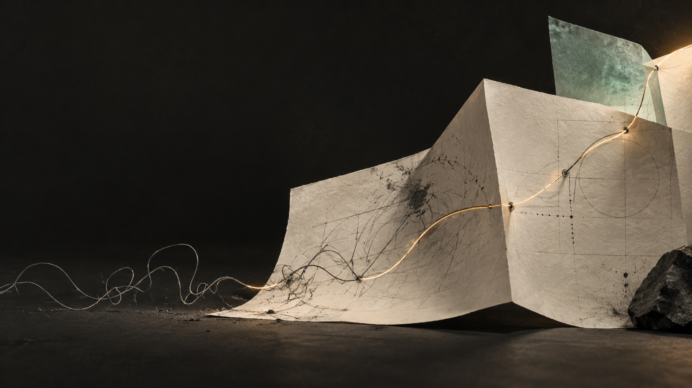
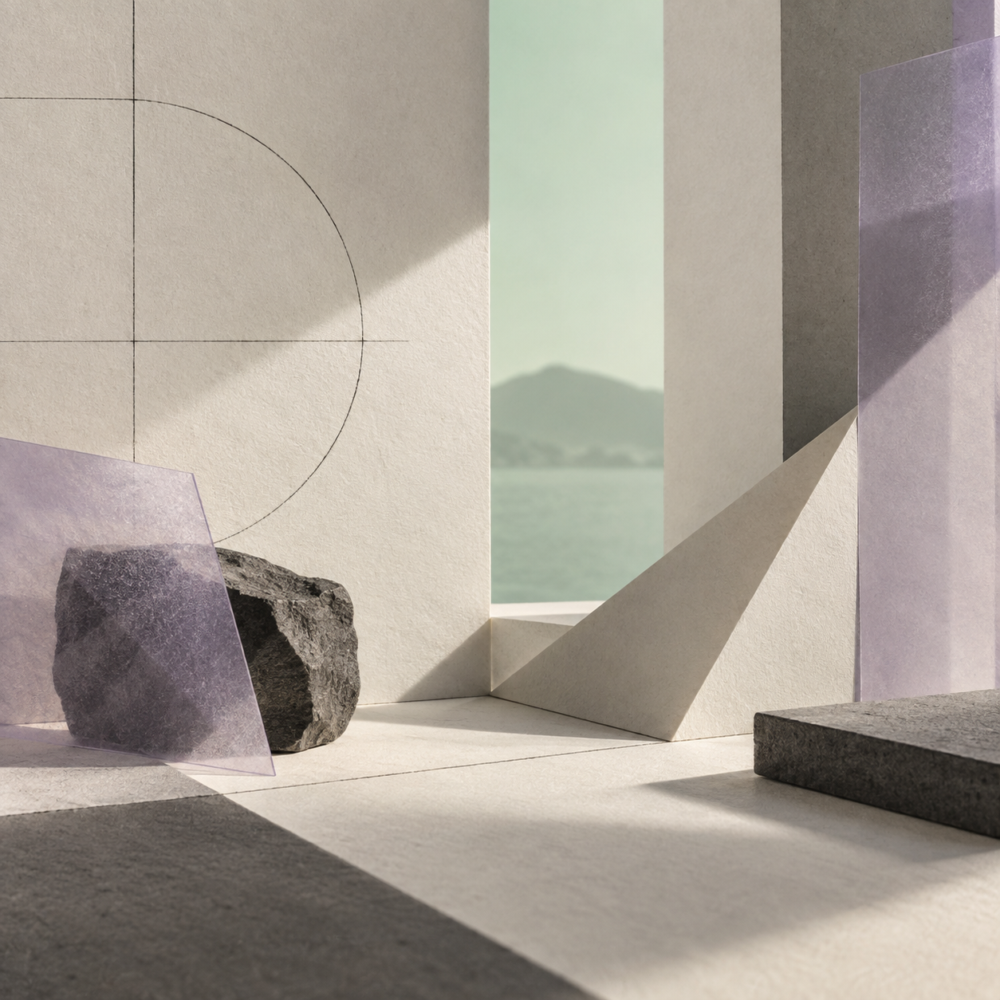
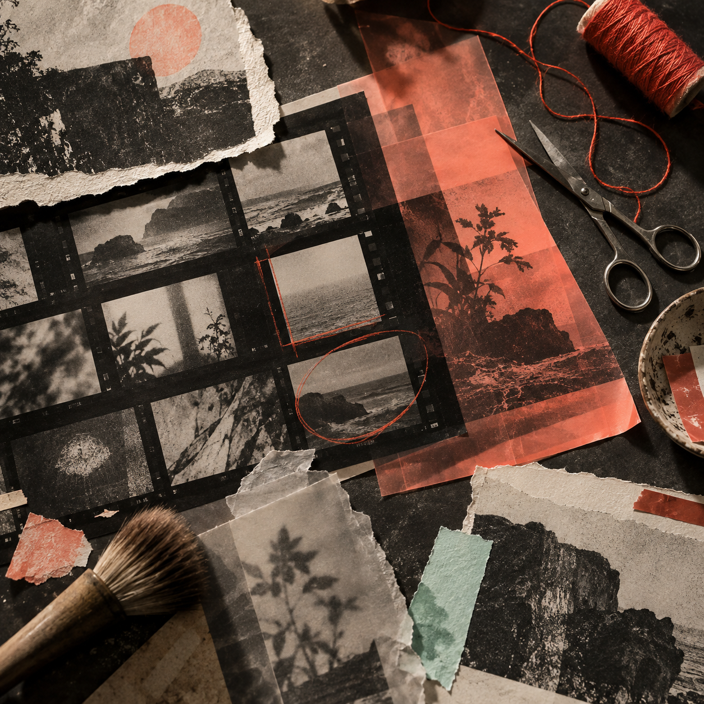

Turn repetitive work into flow.
ÖMER + MÜGE / INDEPENDENT DIGITAL STUDIO
Ideas begin as a signal.
AI systems, fast web experiences, visibility and content. Not as isolated services, but as one working momentum that carries an idea forward.
Guide the light with your cursor or touch. Or ignite the signal.

01 / THE FIRST SPARK AI · WEB · SEO · CONTENTOne idea.
Three active layers.
01 / TWO VIEWS, ONE CURRENT
Ömer makes systems do their work. Müge makes people connect with them. What they share is a need to make the work genuinely move.
02 / THE SIGNAL TRAIL
Every project asks the same thing of us: keep the idea intact while making it clearer, faster and easier to remember.
Turn repetitive work into flow.

Make the invisible findable.

Give an idea a face people remember.
03 / HOW WE OPERATE
Not every problem needs the same package. We read the situation, then turn on the right layer at the right moment.
01 / THINK
Research, personalisation, email operations and follow-ups become connected workflows—without removing the human judgement that matters.
RESEARCH → DECIDE → FOLLOW UP04 / REAL SIGNALS
Built, tested or actively used work. It is here because it affects the outcome, not because it is decorative.
05 / OPEN CHANNEL
A new website, an AI-supported operation, SEO cleanup or a better content rhythm for your brand. Let’s talk—send the first signal.
itsomervural@gmail.com ↗